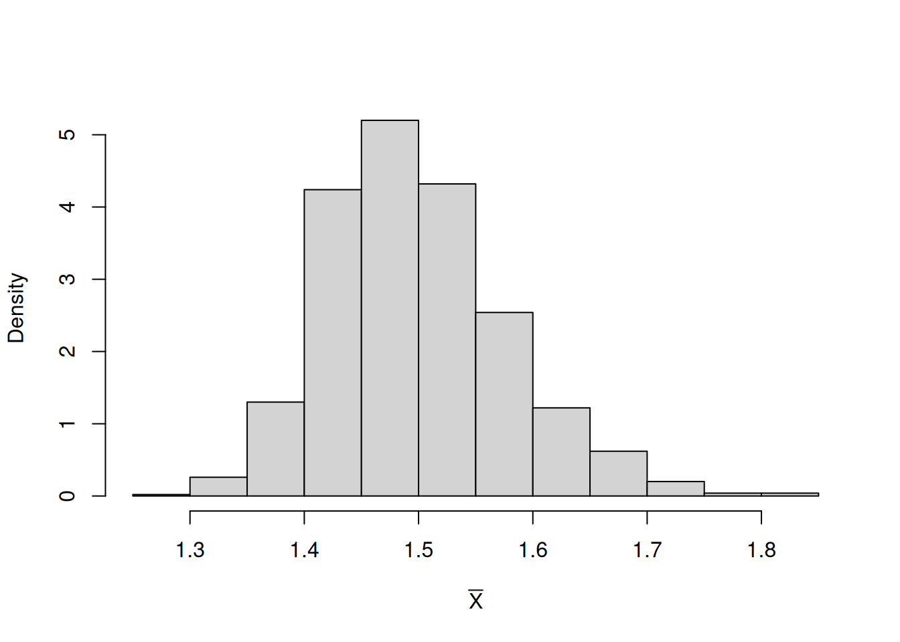
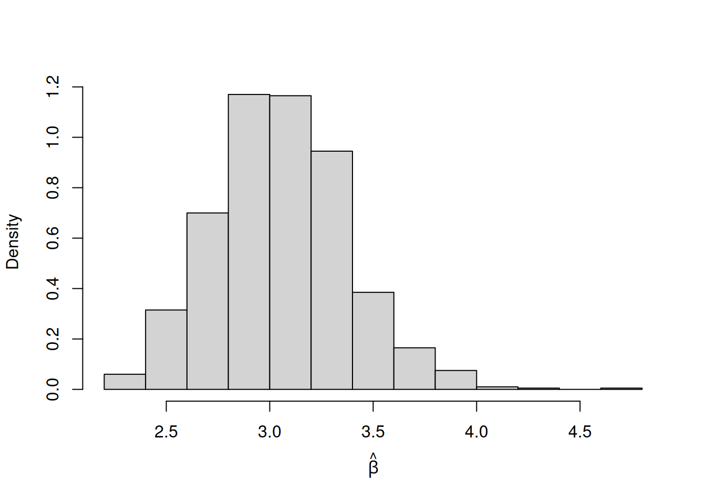

Ao obter um estimador para um parâmetro desconhecido, é fundamental avaliar sua qualidade. Para isso, utilizamos algumas propriedades que permitem comparar estimadores e analisar seu comportamento, tanto em amostras finitas quanto assintoticamente. Seja \(\hat{\theta}\) um estimador para o parâmetro \(\theta\).
Viés
A primeira propriedade de estimadores que abordaremos é o viés. O viés de um estimador mede se, em termos de valor esperado, o estimador é igual ao verdadeiro parâmetro.
Definição
Seja \(\hat{\theta}\) um estimador para \(\theta\). O viés de \(\hat{\theta}\) como estimador para \(\theta\) é
\(B(\hat{\theta}, \theta) = 0\), ou equivalentemente \(E(\hat{\theta}) = \theta\), então dizemos que \(\hat{\theta}\) é um estimador não viesado de \(\theta\);
\(B(\hat{\theta}, \theta) > 0\), então \(\hat{\theta}\) superestima \(\theta\);
\(B(\hat{\theta}, \theta) < 0\), então \(\hat{\theta}\) subestima \(\theta\).
Um estimador não viesado, em média, acerta o valor do parâmetro.
Variância e Erro Quadrático Médio
Frequentemente, também estamos interessados em quanto um estimador varia (gostaríamos que ele fosse não viesado e tivesse pequena variância, para que seja mais preciso). Uma medida que captura essa propriedade dos estimadores é a variância do estimador.
A variância de um estimador \(\hat{\theta}\) é dada por:
Essa é simplesmente a definição usual de variância aplicada à variável aleatória \(\hat{\theta}\), não sendo uma nova definição.
No entanto, em vez de considerar apenas a variância, podemos querer uma medida que avalie diretamente o erro em relação ao verdadeiro parâmetro \(\theta\). Nesse caso, consideramos:
\[E\left[(\hat{\theta} - \theta)^2\right].\]
Essa quantidade é chamada de erro quadrático médio (EQM) e está relacionada tanto ao viés quanto à variância.
Observe que, se \(\hat{\theta}\) for não viesado, então \(E(\hat{\theta}) = \theta\), e, nesse caso, o EQM coincide com a variância.
Definição
O EQM de um estimador \(\hat{\theta}\) de \(\theta\) é
Se \(\hat{\theta}\) é um estimador não viesado de \(\theta\) (i.e \(E(\hat{\theta}) = \theta\)), então podemos notar que \(EQM(\hat{\theta}, \theta) = Var(\hat{\theta})\). De fato, em geral \(EQM(\hat{\theta}, \theta) = Var(\hat{\theta}) + B(\hat{\theta}, \theta)^2\).
Isso leva ao que é conhecido como o “trade-off viés-variância” em aprendizado de máquina e estatística. Em geral, queremos minimizar o EQM, e essas duas quantidades costumam ser inversamente relacionadas. Ou seja, diminuir uma tende a aumentar a outra, e encontrar o equilíbrio entre elas é o que minimiza o EQM.
Pode ser difícil perceber por que isso acontece neste momento, já que ainda não estamos trabalhando com estimadores tão complexos (estamos apenas vendo os conceitos básicos!).
Consistência
Definição
Um estimador \(\hat{\theta}_n\) (dependendo de \(n\) amostras iid) de \(\theta\) é dito (fracamente) consistente se este converge (em probabilidade) para \(\theta\). Isto é, para qualquer \(\epsilon > 0\),
Basicamente, quando \(n \to \infty\), a probabilidade de \(\hat{\theta}_n\) diferir de \(\theta\) por mais de \(\epsilon\) unidades é arbritariamente pequena. A definição é um pouco abstrata, então analisamos o que ela significa no contexto de um exemplo. Lançamos uma moeda \(n\) vezes e seja \(\hat{p}_n\) a proporção de caras obtidas, isto é, o número de caras dividido por \(n\). Essa é uma proporção amostral que estima \(p\), a probabilidade de a moeda resultar em cara. Suponha que \(p = \frac{1}{2}\). Se \(\hat{p}_n\) converge em probabilidade para \(\frac{1}{2}\), então: i) \(P(0{,}49 \leq \hat{p}_n \leq 0{,}51) \to 1\) quando \(n \to \infty\); ii) \(P(0{,}499 \leq \hat{p}_n \leq 0{,}501) \to 1\) quando \(n \to \infty\); e assim por diante.
Dizemos que é consistente em erro quadrático médio (se um estimador é consistente em erro quadrático médio, então ele é fracamente consistente) se
Ambas essas noções referem-se ao comportamento assintótico de \(\hat{\theta}\) e expressam que, à medida que os dados se acumulam, \(\hat{\theta}\) se aproxima cada vez mais do verdadeiro valor de \(\theta\).
A consistência assintótica é uma propriedade desejável. No entanto, em um caso específico, para \(n\) fixo, ela pode ter relevância limitada.
Você pode estar se perguntando: qual é a diferença entre consistência e não-viés? De fato, existe uma diferença sutil, que podemos entender comparando estimadores para \(\theta\) na distribuição contínua \(\text{Unif}(0, \theta)\).
Estimador não viesado e consistente (MoM)
Um exemplo é o estimador de momentos: \[
\hat{\theta}_{n,\text{MoM}} = 2\bar{X}.
\] Ele é não viesado, isto é, \[
E[\hat{\theta}_{n,\text{MoM}}] = \theta,
\] e também consistente, pois sua variância tende a zero quando \(n \to \infty\).
Não viesado, mas não consistente
Considere o estimador que utiliza apenas a primeira observação: \[
\hat{\theta} = 2X_1.
\] Ele é não viesado, pois \[
E[\hat{\theta}] = \theta.
\] No entanto, não é consistente, já que não melhora com o aumento de \(n\), pois ignora as demais observações. A consistência exige que o estimador se aproxime de \(\theta\) à medida que \(n\) cresce.
Viesado, mas consistente (EMV)
O estimador de máxima verossimilhança é: \[
\hat{\theta}_{n,\text{EMV}} = \max(X_1, \dots, X_n).
\] Sua esperança é dada por: \[
E[\hat{\theta}_{n,\text{EMV}}] = \frac{n}{n+1}\theta,
\] o que mostra que ele é viesado. No entanto, \[
\frac{n}{n+1}\theta \to \theta \quad \text{quando } n \to \infty,
\] ou seja, ele é assintoticamente não viesado e consistente.
Nem não viesado nem consistente
Um exemplo simples seria: \[
\hat{\theta} = \frac{1}{2}X_1,
\] que não é nem não viesado nem consistente.
Teorema
Se \(\hat{\theta}_n\) é um estimador não viesado para \(\theta\) e \(\sigma^2_{\hat{\theta}_n} \to 0\) quando \(n \to \infty\), então \(\hat{\theta}_n\) é consistente.
Suponha que o estimador \(\hat{\theta}_n\) converge em probabilidade para \(\theta\) e o estimador \(\hat{\beta}_n\) converge em probabilidade para o parâmetro \(\beta\). Então:
\(\hat{\theta}_n + \hat{\beta}_n\) converge em probabilidade para \(\theta + \beta\);
\(\hat{\theta}_n \times \hat{\beta}_n\) converge em probabilidade para \(\theta \times \beta\);
Se \(\beta \neq 0\), \(\hat{\theta}_n/\hat{\beta}_n\) converge em probabilidade para \(\theta/\beta\);
Se \(g(x)\) é uma função contínua, então \(g(\hat{\theta}_n)\) converge em probabilidade para \(g(\theta)\).
Eficiência
Para tratar do nosso último tópico, eficiência, precisamos primeiro definir a Informação de Fisher.
A eficiência está relacionada à ideia de que nosso estimador possui a menor variância possível. Quando essa propriedade é combinada com consistência e não-viés, temos um estimador que:
está centrado no valor correto (não viesado);
converge para o verdadeiro parâmetro (consistente);
e faz isso da maneira mais rápida possível (eficiente).
Informação de Fisher
Seja \(\mathbf{x} = (x_1, \dots, x_n)\) uma amostra iid proveniente de uma distribuição discreta com função de massa de probabilidade \(p_X(t \mid \theta)\), ou de uma distribuição contínua com função densidade \(f_X(t \mid \theta)\), em que \(\theta\) é um parâmetro (ou vetor de parâmetros).
A Informação de Fisher do parâmetro \(\theta\) é definida por: \[
I(\theta) = n \cdot E\left[\left(\frac{\partial}{\partial \theta} \ln L(\mathbf{x} \mid \theta)\right)^2\right]
= -E\left[\frac{\partial^2}{\partial \theta^2} \ln L(\mathbf{x} \mid \theta)\right],
\] em que \(L(\mathbf{x} \mid \theta)\) denota a função de verossimilhança dos dados dado o parâmetro \(\theta\) (definida na Seção 4.3).
De acordo com a literatura, a Informação de Fisher “é uma forma de medir a quantidade de informação que uma variável aleatória observável carrega sobre um parâmetro desconhecido \(\theta\) do qual depende a distribuição de probabilidade”.
A definição apresentada pode parecer bastante complicada à primeira vista, mas, se você analisá-la com calma, verá que não é tão difícil de trabalhar. De fato, ao verificar se o estimador de máxima verossimilhança é um ponto de máximo, já calculamos a segunda derivada da log-verossimilhança. Portanto, para obter a Informação de Fisher, basta dar um passo adicional: calcular a esperança dessa quantidade. No entanto, interpretar diretamente o valor esperado negativo da segunda derivada da log-verossimilhança não é nada intuitivo; trata-se de uma expressão pouco amigável e difícil de visualizar.
Limite Inferior de Cramér-Rao (CRLB) e Eficiência
Por que definimos essa “complicada” Informação de Fisher? (Na verdade, a situação fica ainda mais complexa quando \(\theta\) é um vetor, pois a segunda derivada se torna uma matriz de derivadas parciais de segunda ordem.)
Seria ideal que o erro quadrático médio de um estimador \(\hat{\theta}\) fosse o menor possível. O Limite Inferior de Cramér-Rao (LICR) fornece justamente um limite inferior para a variância de qualquer estimador não viesado de \(\theta\). Ou seja, se \(\hat{\theta}\) é um estimador não viesado de \(\theta\), então existe uma variância mínima possível (lembrando que, para estimadores não viesados, variância = EQM). Se um estimador atinge essa menor variância possível, dizemos que ele é eficiente; uma propriedade altamente desejável em inferência estatística. Esse limite mínimo é conhecido como Limite Inferior de Cramér-Rao.
Limite Inferior de Cramér-Rao
Seja \(\mathbf{x} = (x_1, \dots, x_n)\) uma amostra iid proveniente de uma distribuição discreta com função de massa de probabilidade \(p_X(t \mid \theta)\), ou de uma distribuição contínua com função densidade \(f_X(t \mid \theta)\), em que \(\theta\) é um parâmetro (ou vetor de parâmetros).
Se \(\hat{\theta}\) é um estimador não viesado de \(\theta\), então: \[
\text{MSE}(\hat{\theta}, \theta) = \text{Var}(\hat{\theta}) \geq \frac{1}{I(\theta)},
\] em que \(I(\theta)\) é a Informação de Fisher definida anteriormente.
O que esse resultado nos diz é que, para qualquer estimador não viesado \(\hat{\theta}\) de \(\theta\), a variância (que, nesse caso, coincide com o EQM) é, no mínimo, \(\frac{1}{I(\theta)}\).
Se atingimos esse limite inferior, isto é, se: \[
\text{Var}(\hat{\theta}) = \frac{1}{I(\theta)},
\] então temos a menor variância possível para o estimador. Nesse caso, dizemos que \(\hat{\theta}\) é um estimador não viesado de variância uniformemente mínima (ENVVUM) para \(\theta\).
Como queremos encontrar a menor variância possível, podemos analisar esse problema sob a perspectiva da eficiência do estimador.
Eficiência
Seja \(\hat{\theta}\) um estimador não viesado de \(\theta\). A eficiência de \(\hat{\theta}\) é definida por: \[
e(\hat{\theta}, \theta) = \frac{I(\theta)^{-1}}{\text{Var}(\hat{\theta})} \leq 1.
\]
Esse valor estará sempre entre 0 e 1, pois, se a variância do estimador for igual ao LICR, então a eficiência será igual a 1. Caso a variância seja maior, a eficiência será menor que 1.
Assim, quanto maior a variância, menor a eficiência; e desejamos que a eficiência seja a maior possível (isto é, igual a 1).
Um estimador não viesado é dito eficiente se atinge o LICR, ou seja, quando: \[
e(\hat{\theta}, \theta) = 1.
\] Nesse caso, ele possui a menor variância possível entre todos os estimadores não viesados.
Vale ressaltar que o LICR não é, em geral, garantido para estimadores viesados.
Estatística Suficiente
Suponha que temos uma amostra iid \(\mathbf{x} = (x_1, \dots, x_n)\) proveniente de uma distribuição conhecida com parâmetro desconhecido \(\theta\). Imagine que temos duas pessoas:
Estatístico A: conhece toda a amostra, ou seja, dispõe de \(n\) observações: \(\mathbf{x} = (x_1, \dots, x_n)\).
Estatístico B: conhece apenas \(T(x_1, \dots, x_n) = t\), um único número que é função da amostra (por exemplo, a soma ou o máximo das observações).
Heuristicamente, \(T(x_1, \dots, x_n)\) é uma estatística suficiente se o Estatístico B consegue fazer um trabalho tão bom quanto o Estatístico A, mesmo tendo “menos informação”. Por exemplo, se as observações seguem uma distribuição Bernoulli, conhecer \[
T(x_1, \dots, x_n) = \sum_{i=1}^n x_i,
\] (o número de sucessos) é tão informativo quanto conhecer todos os resultados individuais. Isso ocorre porque uma boa estimativa seria a proporção de sucessos, isto é, o número de sucessos dividido pelo número total de ensaios.
Assim, não nos importa a ordem dos resultados, mas apenas quantos sucessos ocorreram. A palavra “suficiente” sugere exatamente isso: uma quantidade de informação que é “suficiente” para inferência sobre o parâmetro.
Estatística Suficiente
Uma estatística \(T = T(X_1, \dots, X_n)\) é dita suficiente para o parâmetro \(\theta\) se a distribuição condicional de \(X_1, \dots, X_n\), dado \(T = t\) e \(\theta\), não depende de \(\theta\). Isto é, \[
P(X_1 = x_1, \dots, X_n = x_n \mid T = t, \theta)
=
P(X_1 = x_1, \dots, X_n = x_n \mid T = t).
\]
No caso em que \(X_1, \dots, X_n\) são variáveis contínuas, substituímos a probabilidade por uma função densidade.
Para motivar a definição, retornamos ao exemplo anterior. Novamente, o Estatístico A possui toda a amostra \(x_1, \dots, x_n\), enquanto o Estatístico B conhece apenas o número \(t = T(x_1, \dots, x_n)\). A ideia é que o Estatístico B conhece apenas \(T = t\), mas, como \(T\) é suficiente, ele não precisa conhecer \(\theta\) para gerar novas amostras \(X_1', \dots, X_n'\) da distribuição.
Isso ocorre porque: \[
P(X_1 = x_1, \dots, X_n = x_n \mid T = t, \theta) =
P(X_1 = x_1, \dots, X_n = x_n \mid T = t),\] ou seja, a distribuição condicional não depende de \(\theta\). Como o Estatístico B conhece \(T = t\), ele conhece essa distribuição condicional e pode gerar novas amostras.
Assim, o Estatístico B passa a ter \(n\) observações iid \(X_1', \dots, X_n'\) provenientes da mesma estrutura probabilística. Com essas novas observações, ele pode realizar inferência tão bem quanto o Estatístico A, que possui os dados originais \(X_1, \dots, X_n\) (em média). Portanto, nenhum dos dois está em desvantagem. :)
Embora essa definição seja difícil de verificar diretamente, existe um critério que facilita a identificação de estatísticas suficientes:
Critério da Fatoração de Neyman-Fisher
Sejam \(x_1, \dots, x_n\) uma amostra iid com função de verossimilhança \(L(x_1, \dots, x_n \mid \theta)\). Uma estatística \(T = T(x_1, \dots, x_n)\) é suficiente para \(\theta\) se, e somente se, existirem funções não negativas \(g\) e \(h\) tais que: \[
L(x_1, \dots, x_n \mid \theta)
=
g(x_1, \dots, x_n)\cdot h\big(T(x_1, \dots, x_n), \theta\big).
\]
Ou seja, a verossimilhança dos dados pode ser fatorada como o produto de dois termos:
o primeiro termo \(g\) pode depender de todos os dados, mas não depende de\(\theta\);
o segundo termo \(h\) pode depender de \(\theta\), mas depende dos dados apenas por meio da estatística suficiente\(T\).
Em outras palavras, \(T\) é o único elemento que permite a interação entre os dados \(x_1, \dots, x_n\) e o parâmetro \(\theta\). Assim, não precisamos acessar diretamente as \(n\) observações individuais, basta conhecer o valor de \(T\).
Essas propriedades serão fundamentais para comparar métodos de estimação, como o método dos momentos e a máxima verossimilhança, discutidos ao longo deste capítulo.
4.2 Método dos Momentos
A estimação por máxima verossimilhança (MV), como veremos nesse capítulo, possui uma intuição bastante elegante, mas pode ser matematicamente trabalhosa de resolver. Vamos aprender inicialmente uma técnica para estimar parâmetros, chamada método dos momentos (MoM).
As definições iniciais e a estratégia podem parecer confusas à primeira vista, mas apresentaremos vários exemplos que devem ajudar a tornar tudo mais claro.
Momentos (Revisão)
Seja \(X\) uma variável aleatória e \(c \in \mathbb{R}\) um escalar. Então, o \(k\)-ésimo momento de \(X\) é:
\[
E[X^k],
\] e o \(k\)-ésimo momento de \(X\) em torno de \(c\) é:
\[
E[(X - c)^k].
\] Em geral, temos interesse especial no primeiro momento (média) de \(X\): \(\mu = E[X]\), e no segundo momento em torno da média (variância): \(\text{Var}(X) = E[(X - \mu)^2]\).
Momentos Amostrais
Seja \(X\) uma variável aleatória e \(x_1, \ldots, x_n\) uma amostra i.i.d. de \(X\). O \(k\)-ésimo momento amostral é: \[
\frac{1}{n} \sum_{i=1}^{n} x_i^k.
\] O \(k\)-ésimo momento amostral em torno de \(c\) é: \[
\frac{1}{n} \sum_{i=1}^{n} (x_i - c)^k.
\]
Casos particulares importantes:
O primeiro momento amostral é a média amostral;
O segundo momento amostral em torno da média é a variância amostral.
4.2.1 Ideia por trás do método
A estimação pelo método dos momentos baseia-se exclusivamente na Lei dos Grandes Números, que relembramos a seguir:
Sejam \(Y_1, Y_2, \ldots\) variáveis aleatórias independentes com uma distribuição comum que possui média \(\mu_{Y}\). Então, as médias amostrais convergem para a média da distribuição à medida que o número de observações aumenta:
Para mostrar como o método dos momentos determina um estimador, consideramos inicialmente o caso de um único parâmetro.
Começamos com variáveis aleatórias independentes \(X_1, X_2, \ldots\), geradas segundo a função densidade de probabilidade \(f_X(x \mid \theta)\), associada a um parâmetro desconhecido \(\theta\). A média comum das variáveis \(X_i\), denotada por \(\mu_X\), é uma função \(k(\theta)\) de \(\theta\). Por exemplo, se as \(X_i\) são variáveis aleatórias contínuas, então:
Assim, quando o número de observações \(n\) é grande, a média da distribuição \(\mu = k(\theta)\) pode ser bem aproximada pela média amostral, isto é:
\[
\bar{X} \approx k(\theta).
\]
Essa relação pode ser transformada em um estimador \(\hat{\theta}\), definindo:
\[
\bar{X} = k(\hat{\theta}),
\]
e resolvendo essa equação em relação a \(\hat{\theta}\).
Na sequência, descreveremos o procedimento no caso de um vetor de parâmetros e apresentaremos diversos exemplos. Veremos também que o método delta pode ser utilizado para estimar a variância dos estimadores obtidos pelo método dos momentos.
4.2.2 Procedimento Geral do Método dos Momentos
De forma mais geral, para variáveis aleatórias independentes \(X_1, X_2, \ldots\), geradas segundo uma distribuição associada ao parâmetro \(\theta\), e sendo \(m\) uma função real, se \(k(\theta) =E_{\theta}[m(X_1)],\) então
Pela Lei dos Grandes Números, para cada momento \(m = 1, \ldots, d\), temos: \(\mu_m \approx \overline{x^m}.\)
Passo 4
Substituímos os momentos populacionais \(\mu_m\) pelos momentos amostrais \(\overline{x^m}\). Assim, as soluções em (2) fornecem as fórmulas dos estimadores de momentos \((\hat{\theta}_1, \hat{\theta}_2, \ldots, \hat{\theta}_d)\). Para os dados \(\mathbf{x}\), esses estimadores são dados por:
Para simular uma variável aleatória com distribuição de Pareto, usamos o método da transformação inversa. Se \(U \sim \text{Uniforme}(0,1)\), então:
\[X = (1 - U)^{-1/\theta}.\]
Código em R:
paretobar <-rep(0, 1000)set.seed(14)for (i in1:1000){ v <-runif(100) pareto <-1/ v^(1/3) paretobar[i] <-mean(pareto)}hist(paretobar, xlab =expression(bar(X)), probability =TRUE, main ="")

betahat <- paretobar / (paretobar -1)hist(betahat, xlab =expression(hat(beta)), probability =TRUE, main ="")

mean(betahat)
[1] 3.054922
sd(betahat)
[1] 0.3213791
A média amostral do estimador de \(\theta\), igual a 3.0549, está próxima do valor verdadeiro do parâmetro considerado na simulação que foi \(3\). Neste exemplo, o estimador \(\hat{\theta}\) apresenta viés positivo. Em outras palavras, em média, a estimativa é maior que o verdadeiro valor do parâmetro, isto é: \(E[\hat{\theta}] > \theta\). O desvio padrão amostral, igual a 0.3214, é próximo do valor 0.346 estimado pelo método delta. Quando estudarmos estimadores não viesados, veremos que esse viés já poderia ter sido antecipado.
Resolvendo para \(\theta\) em função da média \(\mu\):
\[
\theta = g_1(\mu) = 2\mu.
\]
Passos 3 e 4
Substituindo a média populacional pela média amostral \(\bar{X}\), obtemos o estimador de momentos:
\[\hat{\theta} = 2\bar{X}.\]
Esperança e Variância
Como o estimador obtido pelo MoM é função linear da média amostral, então é fácil obter seu valor esperado, basta usar propriedades de valores esperado e o fato de \(E(\bar{X}) = \mu\). Assim, temos que
portanto, \(\hat{\theta}\) é um estimador não viciado. De maneira similar, podemos obter a expressão da variância de \(\hat{\theta}\), usando propriedades de variância e o fato de \(Var(\bar{X}) = \sigma^2/n\). Desta forma, temos que:
\[Var(\hat{\theta}) = 4Var(\bar{X}) = 4\left(\frac{\theta^2/12}{n}\right) = \frac{\theta^2}{3n}.\] Além disso, pela Lei dos Grandes Números, temos que \(\bar{X} \xrightarrow{p} \mu\) quando \(n \to \infty\). Agora, usamos o fato de que a convergência em probabilidade é preservada por funções contínuas (no caso, multiplicar por 2):
Observação: Neste caso específico, o estimador de momentos coincide com um estimador simples baseado na média. No entanto, para a distribuição uniforme, o estimador de máxima verossimilhança é \(\hat{\theta}_{MV} = \max(X_1, \dots, X_n)\), o que levanta uma interessante comparação entre métodos de estimação.
Resolvendo para \(\theta\) em função da média \(\mu\):
\[\theta = g_1(\mu) = 2\mu -1.\]
Passos 3 e 4
Substituindo a média populacional pela média amostral \(\bar{X}\), obtemos o estimador de momentos:
\[\hat{\theta} = 2\bar{X} - 1.\]
Esperança e Variância
Como o estimador obtido pelo método dos momentos é uma função linear da média amostral, podemos utilizar propriedades do valor esperado. Sabendo que \(E(\bar{X}) = \mu\), temos:
\[E(\hat{\theta}) = 2E(\bar{X}) - 1 = 2\left(\frac{1+\theta}{2}\right) - 1 = \theta.\] Portanto, \(\hat{\theta}\) é um estimador não viesado.
De maneira similar, utilizando o fato de que \(Var(\bar{X}) = \sigma^2/n\), obtemos:
\[Var(\hat{\theta}) = 4Var(\bar{X}) = \frac{\theta^2-1}{3n}.\] Além disso, como \(\hat{\theta}\) é um estimador não viesado e sua variância é igual a zero, quando \(n \to \infty\), logo \(\hat{\theta}\) é um estimador consistente.
Comparação com o Estimador de Máxima Verossimilhança
Para a distribuição uniforme discreta, o estimador de máxima verossimilhança é dado por:
\[\hat{\theta}_{MV} = \max(X_1, X_2, \dots, X_n).\] Esse resultado decorre do fato de que a função de verossimilhança é constante para \(\theta \geq \max(X_i)\) e nula caso contrário, sendo maximizada no menor valor possível de \(\theta\) que ainda torna a amostra observável.
Comparação entre os estimadores
O estimador de momentos, \(\hat{\theta}_{\text{MoM}} = 2\bar{X} - 1\), utiliza toda a informação da amostra, mas pode assumir valores não inteiros.
O estimador de máxima verossimilhança, \(\hat{\theta}_{\text{MV}} = \max(X_1, X_2, \dots, X_n)\), depende apenas do maior valor observado, mas sempre pertence ao espaço paramétrico.
Além disso:
\(\hat{\theta}_{\text{MoM}}\) é não viesado.
\(\hat{\theta}_{\text{MV}}\) é viesado (subestima o valor verdadeiro), pois \(E(\max(X_1, X_2, \dots, X_n)) < \theta\), embora seja consistente.
Essa comparação ilustra uma diferença fundamental entre métodos de estimação: enquanto o método dos momentos busca reproduzir características médias da distribuição, o método de máxima verossimilhança está diretamente ligado à plausibilidade dos dados observados.
Neste caso, temos apenas um parâmetro, \(\lambda\). Assim, utilizamos o primeiro momento:
\[\mu_1 = \mu = k_1(\theta) = \frac{1}{\theta}.\]
Passo 2
Resolvendo para \(\theta\) em função da média \(\mu\):
\[\theta = g_1(\mu) = \frac{1}{\mu}.\]
Passos 3 e 4
Substituindo a média populacional pela média amostral \(\bar{X}\), obtemos o estimador de momentos:
\[\hat{\theta} = \frac{1}{\bar{X}}.\]
Esperança e Variância
Note que o estimador \(\hat{\theta}\) não é uma função linear da média amostral, o que torna a análise de suas propriedades um pouco mais envolvida. Sabemos que \(S = \sum_{i=1}^n X_i \sim \text{Gama}(n, \theta)\), o que implica que:
\[\bar{X} \sim \text{Gama}(n, n\theta).\] Além disso, é possível mostrar que \(\hat{\theta} = 1/\bar{X}\) segue uma distribuição gama inversa (GI) de parâmetros \(n\) e \(n\theta\), ou seja
\[\frac{1}{\bar{X}} \sim \text{GI}(n, n\theta).\] Consequentemente, a média e a variância são:
Além disso, como \(\bar{X} \xrightarrow{p} \mu = \frac{1}{\theta}\) quando \(n \to \infty\), segue que:
\[\hat{\theta} = \frac{1}{\bar{X}} \xrightarrow{p} \theta,\] pois a função \(g(x)=1/x\) é quase-certamente contínua, i.e., é contínua no suporte considerado, mostrando que o estimador é consistente.
Exemplo: Distribuição Gama
Considere \(X \sim \text{Gama}(\theta_1, \theta_2)\), em que:
Substituindo a média populacional pela média amostral \(\bar{X}\) e segundo momento populacional pelo segundo momento amostral, obtemos os seguintes estimadores de momentos:
O múon é uma partícula elementar com carga elétrica \(-1\) e spin (momento angular intrínseco) igual a \(\frac{1}{2}\). Trata-se de uma partícula subatômica instável com tempo de vida médio de \(2{,}2 \, \mu s\).
Os múons possuem massa aproximadamente 200 vezes maior que a massa do elétron. Como o múon tem a mesma carga e spin que o elétron, ele pode ser visto como uma versão muito mais pesada do elétron.
A colisão de um feixe de prótons (\(p\)) acelerados, com energia de \(600 \, \text{MeV}\) (milhões de elétron-volts), com os núcleos de um alvo de produção gera píons positivos (\(\pi^+\)) por meio de uma das seguintes reações:
\[p + p \rightarrow p + n + \pi^+ \quad \text{ou} \quad p + n \rightarrow n + n + \pi^+.\]
A partir do decaimento subsequente dos píons (tempo de vida médio de \(26{,}03 \, \text{ns}\)), múons positivos (\(\mu^+\)) são formados via o decaimento de dois corpos:
\[
\pi^+ \rightarrow \mu^+ + \nu_\mu,
\]
em que \(\nu_\mu\) representa o neutrino do múon.
O decaimento do múon em um pósitron (\(e^+\)), um neutrino do elétron (\(\nu_e\)) e um antineutrino do múon (\(\bar{\nu}_\mu\)):
em que \(t\) é o ângulo entre a trajetória do pósitron e o spin do \(\mu^+\), e o parâmetro de anisotropia \(\alpha \in [-1/3, 1/3]\) depende da polarização do feixe de múons e da energia do pósitron. Com base nas observações \(t_1, \ldots, t_n\), obtenha o estimador de momentos \(\hat{\alpha}\) para \(\alpha\).
Observação: Neste caso, a média é igual a \(\pi\) para todos os valores de \(\alpha\). Portanto, será necessário utilizar o segundo momento para obter um estimador.
Sejam \(x_1, x_2, \ldots, x_n\) uma amostra i.i.d. de \(X \sim N(\theta_1, \theta_2)\), em que \(\theta_1\) é a média e \(\theta_2\) é a variância. Queremos obter o estimador de momentos para o vetor de parâmetros: \(\theta = (\theta_1, \theta_2)\). Verifique se o estimador é viesado e obtenha sua variância.
Verifique se os estimadores de momentos dos parâmetros que indexam a distribuição gama são consistentes.
4.3 Método de Máxima Verossimilhança
Nesta seção, apresentamos exemplos de estimação por máxima verossimilhança (MV). A ideia central é simples:
Encontrar o valor de \(\theta\) que maximiza a verossimilhança dos dados observados.
Na Estimação por MV, utilizamos uma amostra iid \(X_1, X_2, \dots, X_n\) de alguma distribuição com parâmetro(s) desconhecido(s) \(\theta\), com o objetivo de estimar \(\theta\).
Observação: Recorde que, na descrição em palavras, o que fizemos para encontrar \(\hat{\theta}\) foi calcular a verossimilhança; que é a probabilidade de observar os dados dado o parâmetro \(\theta\); e escolher o “melhor” \(\theta\) , ou seja, aquele que maximiza essa verossimilhança.
Exemplo EMV (Poisson)
Suponha que \(X_1, X_2, \dots, X_n\) sejam amostras iid de uma distribuição Poisson com parâmetro \(\theta\). Qual é o EMV de \(\theta\)?
Passo 1: Calcule a verossimilhança e a log-verossimilhança dos dados
Para fazer isso, tomamos o seguinte produto das funções de probabilidade (FP’s) da Poisson em cada observação \(x_i\), considerando todos os pontos de dados.
Novamente, isso representa a probabilidade de observar \(x_1\), depois \(x_2\), e assim por diante. Essa função é bastante difícil de derivar, então, para facilitar, vamos calcular a log-verossimilhança, utilizando as seguintes identidades:
Passo 2: Calcule a(s) derivada(s) parcial(is) em relação a \(\theta\) e iguale a zero. Resolva a(s) equação(ões)
Agora queremos calcular a derivada da log-verossimilhança em relação a \(\theta\). A derivada de \(-\theta\) é simplesmente \(-1\), e a derivada de \(x_i \ln(\theta)\) é \(\frac{x_i}{\theta}\), pois lembre-se de que \(x_i\) é constante em relação a \(\theta\).
Agora, igualamos a derivada a zero e resolvemos para \(\theta\). O valor \(\hat{\theta}\) é justamente o estimador que queremos encontrar. Fazendo alguma álgebra, obtemos:
Ou seja, o estimador de máxima verossimilhança é simplesmente a média amostral, \(\bar{X}\).
Passo 3: Opcionalmente, verifique se \(\hat{\theta}\) é de fato um máximo (local), checando se a segunda derivada em \(\hat{\theta}\) é negativa (quando \(\theta\) é um único parâmetro), ou se a Hessiana (matriz das segundas derivadas parciais) é negativa semidefinida (quando \(\theta\) é um vetor de parâmetros)
Também queremos calcular a segunda derivada, pois, caso contrário, não sabemos se o ponto encontrado é um máximo ou um mínimo. Derivamos novamente a primeira derivada \(\sum_{i=1}^n \left(-1 + \frac{x_i}{\theta}\right)\) em relação a \(\theta\), e observamos que, como \(\theta^2\) é sempre positivo, o seu negativo é sempre negativo. Assim, a segunda derivada é sempre menor que zero, o que implica que a função é côncava para baixo em todo o domínio.
Isso significa que qualquer ponto onde a derivada seja zero corresponde a um máximo global. Portanto, encontramos com sucesso o máximo global da função de verossimilhança.
\[
\frac{\partial^2 \ln(L(\theta \mid x))}{\partial \theta^2} = \sum_{i=1}^n \left(-\frac{x_i}{\theta^2}\right) < 0. \quad \text{(côncava para baixo em todo o domínio)}
\]
Exemplo EMV (Exponencial)
Suponha que \(X_1, X_2, \dots, X_n \overset{iid}{\sim} \text{Exp}(\theta)\), em que \(\theta > 0\) é a taxa. Encontre o EMV de \(\theta\).
Exemplo EMV (Uniforme Discreta)
Suponha que \(X_1, X_2, \dots, X_n \overset{iid}{\sim} U_d(A)\) com \(A = {1, 2, \ldots, \theta}\) e \(\theta \in \Theta = \{1, 2, \ldots\}\). Encontre o EMV de \(\theta\).
Exemplo EMV (Uniforme Continua)
Suponha que \(X_1, X_2, \dots, X_n \overset{iid}{\sim} \text{Unif}(0, \theta)\), em que \(\theta > 0\). Encontre o EMV de \(\theta\).
Exemplo EMV (Normal Inversa)
Suponha que \(X_1, X_2, \dots, X_n \overset{iid}{\sim} \mathcal{NI}(\theta_1, \theta_2)\), em que \(\theta_1\) é a média e \(\theta_2\) é o parâmetro de forma. Encontre os EMV de \(\theta_1\) e \(\theta_2\).
Exemplo EMV (Birnbaum-Saunders)
Suponha que \(X_1, X_2, \dots, X_n \overset{iid}{\sim} \mathcal{BS}(\theta_1, \theta_2)\), em que \(\theta_1\) é o parâmetro de forma e \(\theta_2\) é o parâmetro de escala. Encontre os EMV de \(\theta_1\) e \(\theta_2\).
Exemplo EMV (Normal)
Suponha que \(X_1, X_2, \dots, X_n \overset{iid}{\sim} \mathcal{N}(\theta_1, \theta_2)\), em que \(\theta_1\) é a média e \(\theta_2\) é a variância. Encontre os EMV de \(\theta_1\) e \(\theta_2\).